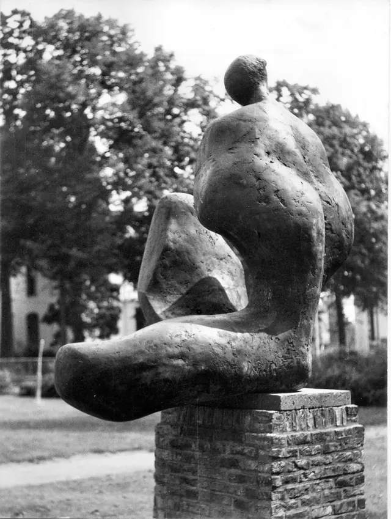

Nieuws ·
Speciale Tentoonstelling Ter Ere van Beeldhouwer Oscar Goedhart in Ateliermuseum Jac Maris

Van 14 januari tot 17 maart 2024 eert het Ateliermuseum Jac Maris in Heumen het leven en werk van de gerespecteerde beeldhouwer Oscar Goedhart (1938-2021) met een unieke tentoonstelling.
Geboren in Nederlands-Indië als zoon van een KNIL-officier, doorstond Oscar een tumultueuze jeugd gekenmerkt door oorlog en ontbering. Zijn artistieke reis begon na terugkeer in Nederland in 1946, waar hij zijn passie voor kunst nastreefde aan de kunstacademie van Arnhem, om zich later te vestigen in Nijmegen. Oscar maakte snel indruk met zijn werk en ontving in 1968 de aanmoedigingsprijs van de Karel de Groteprijs van Nijmegen, een erkenning van zijn uitzonderlijke talent en veelbelovende toekomst.
Beeldhouwer Oscar Goedhart
De tentoonstelling toont Oscars indrukwekkende carrière door een fotoreportage van zijn grote bronzen werken in de openbare ruimte van Nijmegen en omstreken. Later in zijn leven, toen zijn gezondheid een uitdaging werd, richtte Oscar zich op kleinere werken zoals reliëfs, penningen, grafiek, portretten en diverse objecten. Een selectie hiervan wordt tentoongesteld.
Als eerbetoon aan Oscars invloed en vriendschappen in de kunstwereld, omvat de tentoonstelling ook werken van zijn kunstvrienden Klaas Gubbels, Rob Terwindt, Ted Felen en Mark Brusse. Deze kunstenaars behoren tot de eerste generatie die de moderne kunst naar het Rijk van Nijmegen brachten.
Bezoekdetails:
– Data: 14 januari tot 17 maart 2024
– Locatie: Ateliermuseum Jac Maris, Looistraat 57, Heumen
– Openingstijden: Zaterdag en zondag van 13.00 tot 17.00 uur
– Biografie: Verkrijgbaar voor €25
Mis deze kans niet om de nalatenschap van Oscar Goedhart te ontdekken en te vieren, een kunstenaar wiens levensverhaal even boeiend is als zijn kunst.